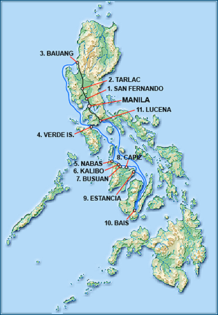
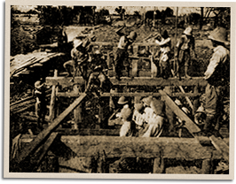

|
j
a v a s c r i p t |
September 15, 1942
Maurice returned from a 23-day journey, 15 days at sea on a 45-ton batel with 48 other passengers — four times its normal load — plus 12 crew. The food included in the fare turned out to be only rice, so the passengers scrambled to buy food at every stop.

Maurice's Batel Voyage
The boat departed Bauang (La Union) and stopped at Verde Island, where it stayed 1-1/2 days as a group of returning southbound students were forced to stop over, then on to Nabas in Panay, arriving in driving rain at night. Hoping for a decent meal and overnight lodgings, Maurice and Berting went in search of the local convent. A lonely padre was glad enough for the company to prepare them a hot supper. They spent a cordial evening swapping stories and drinking tuba (a native fermented coconut drink) with him — mostly disclaiming rumors the padre had heard. Next stop Kalibo, where one Tomas Garde told the Japanese that Maurice was a USAFFE escapee. An officer, 5 soldiers and an interpreter named Nakano boarded the batel to investigate. Fortunately, Nakano knew the Brimos and asked, "Who's Estella?" When Maurice replied, "Gabby's wife" — that was it. The main thing the Japanese looked for was emergency (USAFFE) money, using the trick of offering to buy it at a premium — you're cooked if you have any. At nearby Busuan, a fifth columnist tipped off the Japanese about another passenger. Warned by another, the suspect fled with the Japanese close behind. The batel spent a half-day stuck on a sandbar at New Washington until the tide returned, and then it was on to Capiz, where some passengers debarked on a beach at midnight. As the boat pulled away, they heard shouts and shooting. At Estancia, the guerrillas were in full control of the town and assessing people P5 to P10 for support. Maurice immediately fell under suspicion. As preagreed, the boat master said he was Spanish, to which the guerilla leader asked, "Why didn't you throw him overboard?" The Captain said that Maurice was really "with the Americans," but that only made it worse. "He should be interned, then." If not, and with a Japanese pass to boot, he must be in their employ. "The only thing else I could have been was German," said Maurice, "but that would have been even worse." He got by with various explanations, but the situation being unhealthy, left with the batel two hours later. News of the chaos in Iloilo and Negros reached them so the boatmaster went directly to Bais, where Maurice stayed several days and sold his goods. An ex-major in the Mindanao Army told Maurice that fighting in Mindanao was actually three-sided: against the Japanese, the Moros, and disease. The Moros were on an anti-Christian rampage. He also said that four high-ranking Americans were with regular guerilla units, biding their time, and insisted that General Sharp did not surrender. Berting remonstrated when the major backed out of a deal to buy matches. The major flashed his army ring and threatened: "Look out! Remember what happened to your brother!" — and that was that. (Guerrillas shot Berting's brother on a previous trip south, mistaking him for the son Alejandro Roces.)

Wooden Bridge
On the return leg, they bypassed Kalibo because USAFFE guerrillas had just taken the town and more fighting was expected. Maurice arrived back in Lucena yesterday afternoon and hopped on a slow charcoal-burning truck for Manila. At Baclaran, two packs of cigarettes got them through a night search (the truck had a secret compartment holding three sacks of rice). Maurice was impressed at seeing so many "perfectly destroyed" bridges. The Japanese were building "extremely narrow" replacements. Maurice said, the southern provinces are 90% pro-American, and American flags are flying over most of Negros — with the Japanese besieged and confined to the Manapla Sugar Central, Victorias and Bacolod. Two Japanese that loaded a batel up with goods for Cadiz were promptly robbed and killed on arrival. In reprisal, the Japanese machine-gunned the center of the town, killing at least 40. |
|
|
|
|